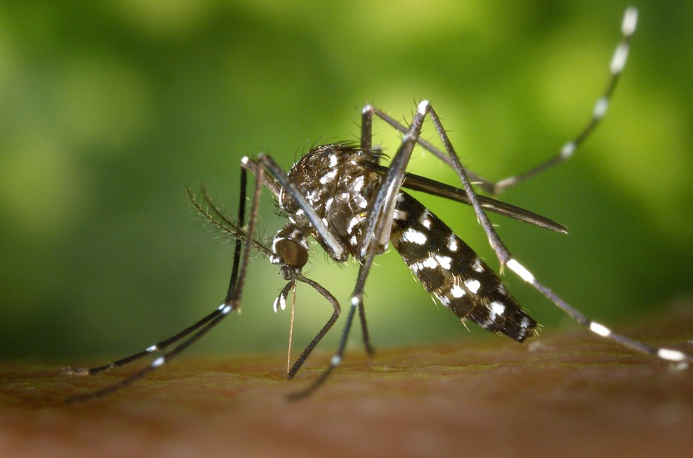
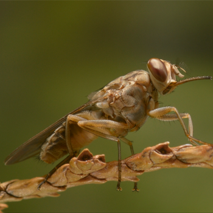
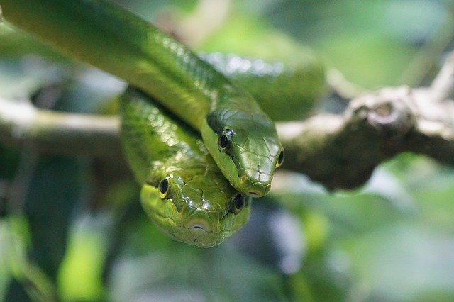
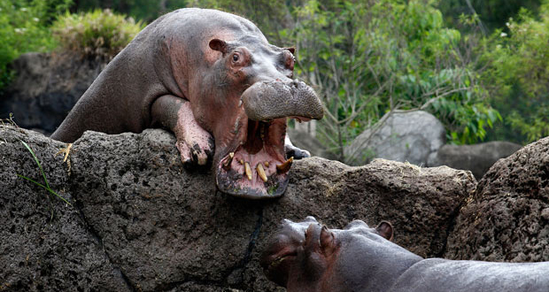
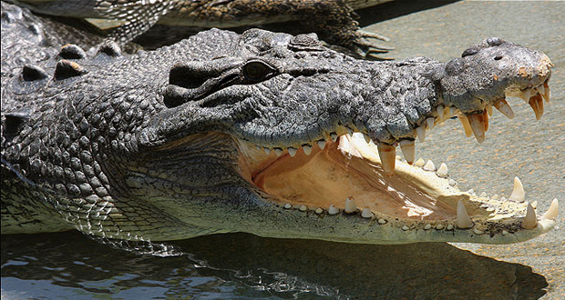
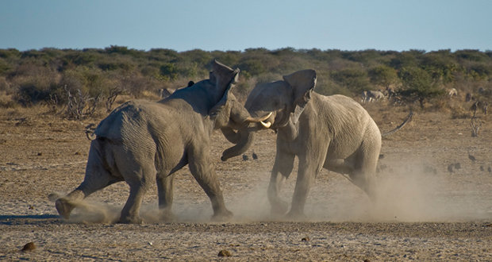

1. Komary - 1 000 0000 - 3 000 0000 ofiar rocznie

Komary to niewątpliwie najbardziej irytujące stworzenia natury, ale to
wcale nie z tego powodu znajdują się na pierwszym miejscu rankingu
najniebezpieczniejsyzch zwierząt. Malaria, żółta febra i filalrioza to
jedne z najcięższych chorób zakaźnych świata, a za ich
rozprzestrzenianie odpowiadają właśnie komary. Mimo podejmowania coraz
bardziej skutecznych prób ochrony przed ich ukąszeniami, rok rocznie
insekty te zabijają zatrważająco wielką liczbę osób.
2. Muchy tse-tse - 400 000 ofiar rocznie

Ta mała skrzydlata kurwa potrafi jednym ukąszeniem zabić dorosłego
człowieka. Muchy tse-tse przenoszą świdrowca, pasożyta bardzo groźnego
dla życia wszystkich ssaków, w tym także człowieka, wywołującego
chorobę zwaną śpiączką afrykańską. Po dwóch-trzech miesiącach od
zakażenia pasożytem organizmu następuje skrajne wycieńczenie i sen,
który kończy się śmiercią.
3. Węże - 50 000 ofiar rocznie

Pierwszą trójkę mrożącego krew w żyłach rankingu najbardziej
niebezpiecznych zwierząt świata zamyka wąż. To obślizłe stworzenie
występuje w przyrodzie w 725 gatunkach, z których przedstawiciele aż
250 potrafą zabić człowieka jednym ugryzieniem. To, że nie wszystkie
węże są śmiertlenie jadowite nie jest chyba żandym pocieszeniem,
zwłaszcza biorąc pod uwagę fakt, że co roku zwierzęta te zabijają
blisko 50 tysięcy ludzi.
4. Psy - 40 000 ofiar rocznie

Lojalne, odważne, bezgranicznie oddane i kochające – psy nie bez
powodu nazywa się najlepszymi przyjaciółmi człowieka. Posiadanie
takiego czworonoga wiąże się jednak z dużą odpowiedzialnością – pies w
rękach nieodpowiedniego właścieciela to niebezpieczeństo, z którego
nie wszyscy zdają sobie sprawę. Śmiertelne pogryzienia przez psy, o
których niestety słyszy się coraz częściej, są wynikiem ludzkich
błędów i zaniechań – brak mądrego wychowania psa, zaniedbywanie i
znęcanie często doprowadzają do wyzwolenia w zwierzęciu jego
pierwotnych instynktów, doprowadzając w rezultacie do tragedii. Psy są
także głównymi nosicielami wścieklizny, na którą w samych Indiach co
30 minut umiera jedna osoba.
5. Skorpiony - 5 000 ofiar rocznie

Już jedno spojrzenie na tego stawonoga przyprawia o gęsią skórkę.
Długi odwłok zakończony kolcem, który zawsze zdaje się złowrogo
wskazywać kolejną ofiarę sprawia, że skorpiony są jednymi z
najbardziej przerażających człowieka stworzeń. Mimo że zaledwie 25 z
blisko 1500 gatunków skorpiona jest jadowitych i niebezpiecznych dla
człowieka, to liczba zabijanych przez nich corocznie osób jest
przytłaczająca.
Inne niebezpieczne zwierzęta


